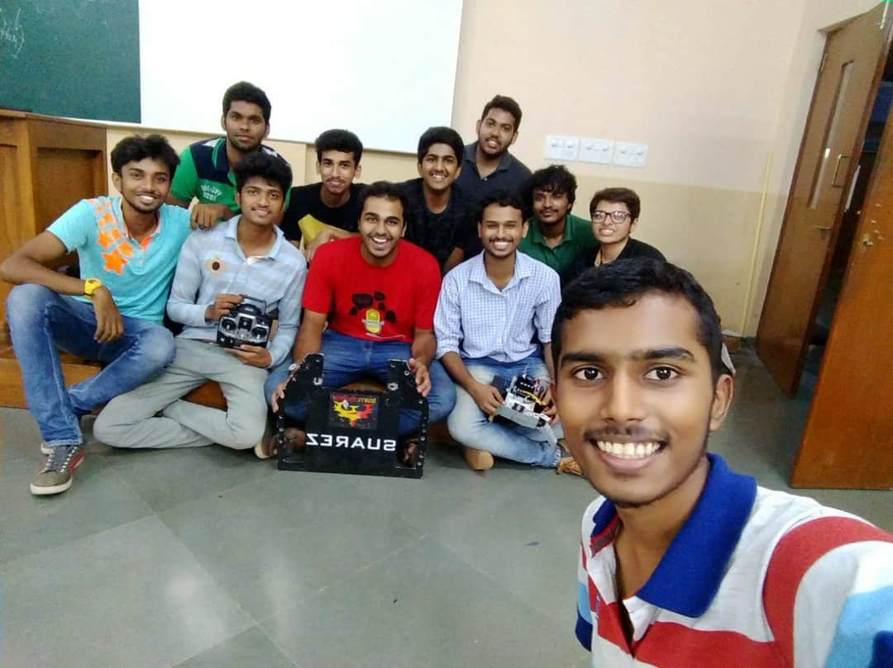

Miscellaneous
A Starter Guide To Robotics
The aim of this article is to provide some insights into how anyone can begin developing robots efficiently, despite having 0 knowledge at this point.
The concept of robotics, is simplifying tasks and replacing humans with robots, thus reducing human error and increasing productivity. But sadly, before we start making complex robots for the betterment of society (assuming unemployment is a myth), we need to learn how to make simpler robots which will ultimately lead us to this goal.
#TIP1: DON’T WASTE TIME ON LEGOS
There are some typical robots made by LEGO which you’ll come across in most high schools, which are “assembled” if not “bought”. But even though the learning curve for these is very steep with time, I wouldn’t really deem it as useful. This is primarily due to the fact that these kits are a complete waste of time unless you’re below the age of 11 or 12 because they don’t really have the satisfaction of completing you’re own project from scratch and also more importantly doesn’t require much troubleshooting if you’re stuck.
#TIP2: IF NOT LEGOS, THEN???
Start off with MOOCs. Massive Open Online Courses(MOOCs), are one of the best ways to get some sufficient knowledge and a certificate(usually) at the same time. Many platforms offer amazing robotics courses such as coursera, udemy, edx, etc. They have a wide variety of topics and many courses go into details of various algorithms and common technologies used in robotics. This will form a solid base for your future projects.
#TIP3: NOW WHAT???
After acquiring sufficient knowledge from these courses, you can start developing on projects that you feel are interesting. There are various open-source websites where you can find cool projects with proper documentation and all the details required. You can continue developing a wide spectrum of projects and learn a lot in the process. After this, you will now be ready to fabricate your own ideas into projects.
#TIP4: TROUBLESHOOT
If you are a beginner and have no experience, troubleshooting is the key to progress. Whenever you run into a problem do a quick 6 second google search and watch those 6 seconds turn into 60 seconds and then into 60 minutes. The information you collect when troubleshooting is something that is very special and that’s what divides a beginner and an experienced person in robotics.
My Experience With Team Phoenix
Being part of a university level robotics team would mean a lot to most high school students, and my case was no different. I was a part of the team phoenix family right from 8th grade upto 10th grade, and was the youngest in the team. My fellow "engineer-teammates" helped me learn the technical aspect of engineering and also fueled my passion for robotics and engineering even further. Not only did my teammates give me an awful amount of knowledge and experience but also taught me valuable life skills especially collaboration. We took part in various events scattered all over the country and during these trips I met new people, learnt new technologies, but more importantly every episode with team phoenix broadened my perspective and helped me become capable of accepting new ideas and point of views.
Here are some of our team pics :)

.jpg)
